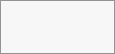

Private replies are messages that are forwarded directly to a one-to-one conversation between you and specific message author, to maintain privacy where it's needed. Add the address to the whitelist.
In group and public conversations, select a message you want to reply to privately
In message actions, select Reply privately
A one-to-one conversation window opens with the original message quoted
Add your response and send a message
The reply provides a full context of a quoted message — including the original sender's name, original conversation context, and backlink.
